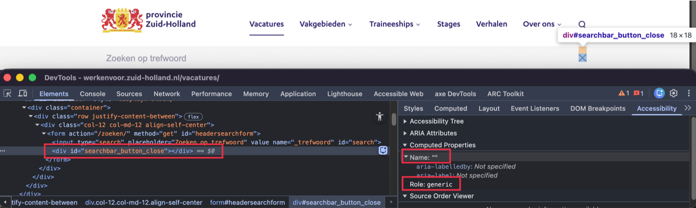
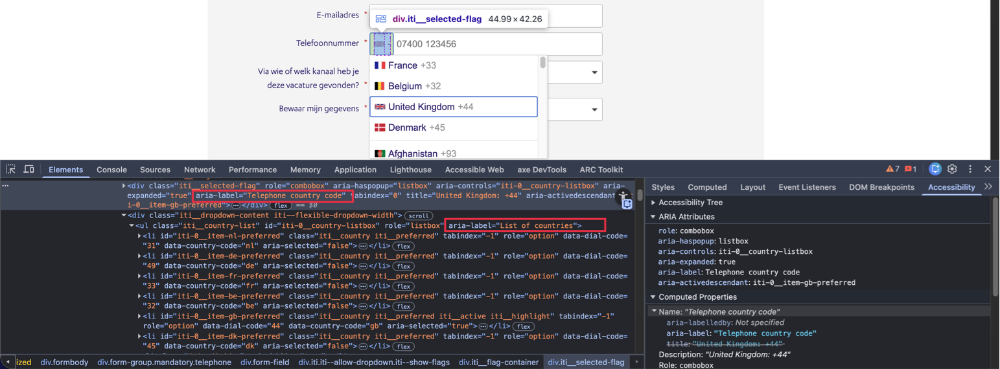

Audit digitale toegankelijkheid van website werkenvoor.zuid-holland.nl
Samenvatting
Wij hebben de website werkenvoor.zuid-holland.nl onderzocht op 18 april 2026. In dit rapport lees je welke punten verbetering behoeven en hoe deze kunnen worden aangepakt.
Het onderzoek richt zich op zowel de techniek als de content van de website. Er zijn verschillende pagina's onderzocht: de homepagina, het vacature-overzicht, losse vacaturepagina's, het sollicitatieformulier en ondersteunende pagina's zoals Stages, Contact en Mijn profiel.
Als de bezoeker met de muis over de items in het hoofdmenu in de header beweegt, verschijnt er extra content die bestaande pagina-inhoud overlapt. Zie bijvoorbeeld het item "Vakgebieden".
Hetzelfde gebeurt wanneer deze items de toetsenbordfocus krijgen.
Oplossing
De bezoeker moet deze content makkelijk kunnen sluiten zonder de muis te gebruiken of de toetsenbordfocus te verplaatsen. Bijvoorbeeld door de Escape-toets in te drukken. Zo kan de bezoeker snel de extra informatie verbergen en doorgaan met de belangrijkste onderdelen van de pagina.
Het hoofdmenu in de header bevat items zoals de link "Vakgebieden" die extra content (submenu's) openen, maar gebruikers van een schermlezer krijgen geen informatie over of deze content open of gesloten is.
Deze links hebben pijl-iconen om submenu's aan te duiden, maar deze iconen hebben geen tekstalternatief.
Een vergelijkbaar probleem doet zich voor bij het zoekicoon (vergrootglas), dat als link functioneert en een paneel met een zoekveld opent. De uitgeklapte of ingeklapte status van dit paneel wordt ook niet aan hulpsoftware doorgegeven.
Ook op een klein scherm is er een menuknop (drie horizontale streepjes) bovenaan. Deze knop opent een navigatiemenu, maar de staat van het menu (open of dicht) wordt niet programmatisch aan hulpsoftware doorgegeven.
Als er een element is dat extra content kan tonen of verbergen, dan moet hulpsoftware de staat van deze content (zichtbaar of verborgen) kunnen bepalen. Deze informatie ontbreekt.
Oplossing
Gebruik het aria-expanded-attribuut op de links die extra content openen.
#3 - Placeholder-tekst van zoekveld heeft een te laag contrast
In de header van de website functioneert het zoekicoon (vergrootglas) als link en opent een paneel met een zoekveld. De grijze (#9D9BAD) placeholder-tekst van het zoekveld heeft een contrastverhouding van 2,5:1 ten opzichte van de lichtgrijze (#F4F4F4) achtergrond. De huidige contrastverhouding is onvoldoende.
Oplossing
Zorg ervoor dat de placeholder-tekst een contrast van minimaal 4,5:1 heeft ten opzichte van de achtergrond.
In de header van de website functioneert het zoekicoon (vergrootglas) als link en opent een paneel met een zoekveld. De contrastverhouding tussen de lichtgrijze (#EEEEEE) randkleur van het zoekveld en de witte achtergrond van de pagina is 1,2:1.
De randen van interactieve elementen zoals invoervelden moeten minimaal een contrast van 3,0:1 hebben met de achtergrond.
Oplossing
De randen van interactieve elementen zoals invoervelden moeten minimaal een contrast van 3,0:1 hebben met de achtergrond.
#5 - Placeholder-tekst wordt gebruikt als label voor een invoerveld
In de header van de website functioneert het zoekicoon (vergrootglas) als link en opent een paneel met een zoekveld. Dit invoerveld met placeholder-tekst "Zoeken op trefwoord" heeft geen permanent zichtbaar label; de placeholder-tekst wordt als label gebruikt.
Invoervelden moeten een label hebben dat altijd zichtbaar is. Je kunt hier dus niet een placeholder-tekst voor gebruiken, want die verdwijnt zodra de bezoeker begint te typen.
Oplossing
Voeg een permanent zichtbaar label toe bij het invoerveld.
#6 - Onjuiste toegankelijke rol bij een interactief element
Impact: GrootType: TechniekWCAG: 4.1.2EN: 9.4.1.2

In de header van de website functioneert het zoekicoon (vergrootglas) als link en opent een paneel met een zoekveld. Naast het zoekveld staat een klikbaar "X"-icoon waarmee dit paneel gesloten kan worden. Dit interactieve element heeft echter niet de juiste toegankelijke rol.
Dit element heeft niet de juiste toegankelijke rol. Daardoor herkennen schermlezers niet dat het om een knop gaat. Hulpsoftware kan het element niet correct aankondigen of bedienen.
Oplossing
Zorg ervoor dat dit element de juiste toegankelijke rol heeft. De beste oplossing is het gebruik maken van standaard HTML-elementen, bijvoorbeeld <button>.
In de header van de website functioneert het zoekicoon (vergrootglas) als link en opent een paneel met een zoekveld. Naast het zoekveld staat een klikbaar "X"-icoon waarmee dit paneel gesloten kan worden. Dit icoon heeft echter geen tekstalternatief. Wanneer een knop alleen uit een afbeelding bestaat, moet het tekstalternatief van de afbeelding de functie van de knop beschrijven.
Bovendien heeft deze knop geen toegankelijke naam. Daardoor is het voor gebruikers van een schermlezer niet duidelijk wat de functie van de knop is.
Hetzelfde probleem doet zich voor op een klein scherm bij de menuknop (drie horizontale streepjes) en de "X"-knop in het geopende menu.
Oplossing
Voeg een tekstalternatief toe dat de functie van de knop beschrijft. Dit kan door een tekstalternatief bij het icoon te gebruiken of door een aria-label toe te voegen aan de knop.
#8 - Toetsenbordbediening ontbreekt
Impact: GrootType: TechniekWCAG: 2.1.1EN: 9.2.1.1
In de header van de website functioneert het zoekicoon (vergrootglas) als link en opent een paneel met een zoekveld. Naast het zoekveld staat een klikbaar "X"-icoon waarmee dit paneel gesloten kan worden. Deze knop is niet toetsenbordtoegankelijk.
Oplossing
Zorg ervoor dat de knop zowel met de spatiebalk als de Enter-toets kan worden bediend.
Op een klein scherm is de menuknop (drie horizontale streepjes) bovenaan aanwezig. Deze knop opent een mobiel menu. Momenteel kunnen bezoekers met het toetsenbord uit het mobiele menu navigeren. De toetsenbordfocus verschuift dan naar de onderliggende pagina terwijl het menu open blijft.
Wanneer dit menu is geopend, bedekt het menu de interactieve elementen op de onderliggende pagina. Deze elementen kunnen nog steeds toetsenbordfocus krijgen, terwijl ze niet zichtbaar zijn. Elementen die toetsenbordfocus krijgen, moeten altijd zichtbaar zijn, omdat dit anders verwarrend kan zijn voor bezoekers die met het toetsenbord navigeren.
Oplossing
Zorg ervoor dat de toetsenbordfocus binnen het mobiele menu blijft zolang het menu is geopend. Verplaats de focus pas terug naar de onderliggende pagina nadat het menu is gesloten, bijvoorbeeld via een sluitknop of met de ESC-toets. Als alternatief kan het menu automatisch worden gesloten wanneer de focus het menu verlaat.
Op een klein scherm opent de menuknop (drie horizontale streepjes) bovenaan een mobiel menu. Binnen dit menu komt de toetsenbordfocus terecht op onzichtbare interactieve elementen na de links "Vakgebieden" en "Traineeships".
Als de toetsenbordfocus op onzichtbare elementen terechtkomt, verdwijnt de focusindicator en weten bezoekers niet meer waar ze zijn op de pagina. Dat maakt de navigatie voor toetsenbordgebruikers erg lastig.
Oplossing
Zorg dat onzichtbare elementen geen toetsenbordfocus kunnen ontvangen. Dit kan door display: none of visibility: hidden te gebruiken in plaats van elementen alleen visueel te verbergen. Als een element verborgen is maar later weer zichtbaar wordt (zoals een submenu), gebruik dan tabindex="-1" om het uit de tabvolgorde te halen zolang het niet zichtbaar is. Wanneer het element verschijnt, verwijder je het tabindex-attribuut of zet je het op 0.
#11 - Bezoekers die inzoomen tot 200% en 400% kunnen niet meer alle functies gebruiken
Impact: GrootType: TechniekWCAG: 1.4.4EN: 9.1.4.4
Wanneer de pagina's van de website worden ingezoomd tot 200%, zijn de links binnen het submenu "Vakgebieden" in het mobiele menu niet zichtbaar en niet te bedienen. Zie bijvoorbeeld de links "Mobiliteit & Techniek", "Energietransitie" en "Natuur".
Als een bezoeker inzoomt, moet alles nog werken.
Hetzelfde probleem doet zich voor wanneer de pagina's van de website worden ingezoomd tot 400%. Zie de links in het mobiele menu zoals "Verhalen" en de links in de submenu's "Vakgebieden" en "Traineeships".
Oplossing
Zorg ervoor dat alles nog werkt als een bezoeker inzoomt tot 200% en 400% op een scherm van 1280 bij 1024 pixels.
#12 - Engels tekstalternatief op Nederlandse pagina's
In de footer van de website staat een tekst in een andere taal zonder taalcode. Zie het alt-attribuut van de afbeelding: "World class Work place 2021".
Op pagina's in het Nederlands is een tekstalternatief in het Engels geschreven. Een schermlezer leest de tekst voor in de taal van de pagina. Als het tekstalternatief in een andere taal is, wordt het onverstaanbaar voorgelezen.
Oplossing
Schrijf het tekstalternatief in dezelfde taal als de pagina. Als het tekstalternatief in een andere taal moet zijn, geef dan de taal aan met het lang-attribuut op het element, bijvoorbeeld lang="en" voor Engels.
#13 - Kop is niet als kop gemarkeerd
Impact: MediumType: ContentWCAG: 1.3.1EN: 9.1.3.1
In de footer is de tekst "Provinciehuis Zuid-Holland" een kop, maar het kop-element ontbreekt. Het <strong>-element wordt gebruikt om de tekst op een kop te laten lijken.
Het <strong>-element en het <em>-element zijn niet bedoeld om koppen mee te markeren. Deze elementen geven uitsluitend nadruk aan tekst en hebben geen semantische betekenis als kop.
Koppen worden gebruikt om de structuur van een tekst vast te leggen. Alleen wanneer koppen met een kop-element (h1 tot en met h6) zijn gemarkeerd, kan hulpsoftware deze structuur herkennen en correct interpreteren.
Oplossing
Verwijder het <strong>-element en markeer deze tekst met een passend kop-element, zoals <h3>. De visuele opmaak kan eventueel met CSS worden toegepast.
Dit type element wordt vaak toegevoegd via de knop "B" (vet) in een tekstbewerker.
#14 - Cookiebanner: koppen zijn niet als koptekst gemarkeerd
Impact: MediumType: ContentWCAG: 1.3.1EN: 9.1.3.1
In de cookiebanner staan koppen die niet als kopteksten zijn gemarkeerd. Het gaat om "Functionele cookies" en andere koppen. Een blinde bezoeker krijgt een andere structuur voorgelezen dan een ziende bezoeker.
Oplossing
Zet deze teksten in kop-elementen, bijvoorbeeld <h3>.
#15 - Cookiebanner: onvoldoende contrast van tekst
In de cookiebanner staat groene (#2F9935) tekst "Ingeschakeld" met onvoldoende contrast. De lettergrootte is 16px. Deze tekst is niet voor iedereen zichtbaar.
Oplossing
Zorg ervoor dat de tekst een contrastverhouding van minimaal 4,5:1 heeft ten opzichte van de achtergrond.
Onder "Onze mogelijkmakers aan het woord" staat een carrousel met grijze pijlen om door de slides te bladeren. De iconen op deze knoppen hebben te weinig contrast en zijn daarom niet voor iedereen zichtbaar. Momenteel bedraagt het contrast 1,5:1.
Op deze pagina staat onder de kop "Filteren" een zoekbalk. Het vergrootglasicoon in deze zoekbalk heeft onvoldoende contrast ten opzichte van de achtergrond. De contrastverhouding van 2,9:1 is te laag.
Het icoon is dus niet voor iedereen zichtbaar.
Oplossing
Zorg ervoor dat het contrast van het icoon minimaal 3,0:1 is ten opzichte van de achtergrond.
#18 - Placeholder-tekst is gebruikt als label voor invoerveld
Op deze pagina staat onder de kop "Filteren" een zoekbalk. Dit invoerveld met placeholder-tekst "Zoek op trefwoord..." heeft geen permanent zichtbaar label.
Invoervelden moeten een label hebben dat altijd zichtbaar is. Dat kan een tekst zijn of een afbeelding (icoon). Hoewel het invoerveld een vergrootglasicoon bevat dat als label zou kunnen dienen, heeft dit icoon onvoldoende kleurcontrast ten opzichte van de achtergrond. Hierdoor is het niet voor alle bezoekers zichtbaar. Een placeholder-tekst kan niet als label dienen, omdat deze tekst verdwijnt als de bezoeker begint te typen. Een invoerveld zonder zichtbaar label kan mensen in de war brengen, omdat ze niet weten wat ze moeten invullen.
Een vergelijkbaar probleem doet zich voor bij de invoervelden "Min" en "Max" onder "Uren per week". Deze invoervelden met placeholder-teksten hebben geen permanent zichtbaar label.
Oplossing
Voeg een label toe in de vorm van een tekst of een icoon met voldoende contrastverhouding.
#19 - Groepslabel is niet gekoppeld aan de groep met keuzevakjes
Op deze pagina bevat een zijbalk met filters een groepslabel "Vakgebied" dat niet is gekoppeld aan de bijbehorende groep keuzevakjes.
Hierdoor ziet de schermlezer niet dat er een relatie is tussen het groepslabel en de keuzevakjes (checkboxes). De individuele labels van elk keuzevakje worden voorgelezen zonder het groepslabel.
Oplossing
Gebruik fieldset- en legend-elementen. Andere oplossingen zijn ook mogelijk.
#20 - Element heeft niet de juiste toegankelijke rol
Impact: GrootType: TechniekWCAG: 4.1.2EN: 9.4.1.2
Op deze pagina bevat een zijbalk met filters een groep keuzevakjes onder "Vakgebied". Deze keuzevakjes hebben niet de juiste toegankelijke rol.
Elk HTML-element heeft een rol. Dit betekent dat het element bepaalde eigenschappen en functies heeft om informatie aan de bezoeker te geven of om informatie van de bezoeker te ontvangen. De rol bepaalt dus wat het element doet. Schermlezers en andere hulpmiddelen moeten de correcte rol van elk element op een webpagina kennen. Zo kunnen ze op een slimme manier met het element omgaan en aan de bezoeker uitleggen wat het element doet.
Een vergelijkbaar probleem doet zich voor bij de knoppen "Toon 15 meer" en "Toon minder" die onder de keuzevakjes staan. Deze knoppen hebben niet de juiste toegankelijke rol.
Zie ook de pagineringslinks: "1", "2", "Volgende" en andere. Ook deze interactieve elementen hebben niet de juiste toegankelijke rol.
Oplossing
Zorg dat de elementen de juiste rol hebben.
Gebruik het standaard HTML-element <input type="checkbox"> voor de keuzevakjes.
Gebruik het <button>-element voor de knoppen "Toon 15 meer" en "Toon minder". Dit element heeft standaard de juiste rol en is met het toetsenbord te bedienen.
Gebruik voor paginering bij voorkeur <a>-elementen met een geldige href, omdat deze navigatie representeren.
#21 - Interactieve elementen zijn niet met het toetsenbord te bedienen
Impact: GrootType: TechniekWCAG: 2.1.1EN: 9.2.1.1
Op deze pagina zijn de keuzevakjes in de zijbalk met filters onder "Vakgebied" niet toetsenbordtoegankelijk.
Hetzelfde probleem doet zich voor bij de knoppen "Toon 15 meer" en "Toon minder" onder de keuzevakjes in de filtersectie en bij de pagineringslinks zoals "1", "2", "Volgende" onder de zoekresultaten.
Oplossing
Zorg dat alle interactieve elementen met het toetsenbord kunnen worden bediend.
#22 - Keuzelijsten (select-elementen) hebben geen toegankelijke naam
Impact: GrootType: TechniekWCAG: 4.1.2EN: 9.4.1.2
Op deze pagina bevatten de keuzelijsten in de zijbalk met filters, zoals "Opleidingsniveau", "Functietype" en andere, geen toegankelijke naam.
Hierdoor is het voor blinde of slechtziende bezoekers die een schermlezer gebruiken niet duidelijk wat de functie van deze velden is.
Oplossing
Zorg ervoor dat elk <select>-element een toegankelijke naam heeft.
Dit kan bijvoorbeeld door een <label>-element correct aan het <select>-element te koppelen. Hierdoor kunnen schermlezers de functie van het veld op de juiste manier aankondigen.
#23 - Keuzelijst (select-element) heeft geen label, omdat eerste optie als label is gebruikt
Op deze pagina, in de filtersectie onder "Uren per week", vormen de invoervelden "Min" en "Max" en de knop "Ga" samen één logisch geheel. Visueel is duidelijk dat deze formulierelementen bij elkaar horen en betrekking hebben op hetzelfde onderwerp.
Deze relatie is echter niet programmatisch vastgelegd in de HTML. Hierdoor is het voor gebruikers van hulpsoftware, zoals schermlezers, niet duidelijk dat deze formulierelementen samen één groep vormen en dat ze betrekking hebben op "Uren per week".
Oplossing
Zorg ervoor dat de relatie tussen de formulierelementen programmatisch wordt vastgelegd.
Plaats de bij elkaar horende formulierelementen in een <fieldset>-element en gebruik een <legend> om de groep een duidelijke naam te geven, bijvoorbeeld "Uren per week".
#25 - Toegankelijke namen van invoervelden zijn niet duidelijk
Op deze pagina bevatten de invoervelden voor "Uren per week" toegankelijke namen zoals "Min" en "Max". Deze namen zijn niet voldoende beschrijvend en maken niet duidelijk wat er precies in de velden moet worden ingevuld.
Hierdoor kan het voor gebruikers van hulpsoftware, zoals schermlezers, onduidelijk zijn wat de functie is van deze invoervelden.
Oplossing
Zorg ervoor dat de invoervelden een duidelijke en beschrijvende toegankelijke naam hebben.
Gebruik bijvoorbeeld toegankelijke namen zoals "Minimum aantal uren per week" en "Maximum aantal uren per week", zodat de functie van de velden voor alle gebruikers duidelijk is.
#26 - Statusbericht na toepassen filter wordt niet tijdig voorgelezen
Op deze pagina kunnen bezoekers zoekresultaten verfijnen met een zoekveld en filters. Wanneer de resultaten dynamisch worden bijgewerkt, wordt ook de melding zoals "16 vacatures gevonden" overeenkomstig bijgewerkt.
Schermlezers lezen deze melding niet op en bezoekers die een schermlezer gebruiken krijgen deze informatie niet op het moment wanneer het nodig is.
Een vergelijkbaar probleem doet zich voor bij de tekst onder de zoekresultaten, zoals "1 - 12 van 23 vacatures".
Oplossing
Meldingen zoals deze worden statusberichten genoemd. En die moeten altijd opgemerkt worden door schermlezers, zodat die ze automatisch voorlezen. Dat bereik je door role="status" aan de melding toe te voegen. Zie voor meer informatie de pagina https://www.w3.org/WAI/WCAG21/Techniques/aria/ARIA19.
#27 - Bij 400% of 320px breedte zoom is een horizontale scrollbar aanwezig
Wanneer deze pagina wordt bekeken op een schermresolutie van 1280 bij 1024 pixels en wordt ingezoomd tot 400% [320px breedte], verschijnt er een scrollbar.
Horizontaal scrollen op de hele pagina is niet toegestaan, ook niet als de viewport is ingesteld of ingezoomd op 320 CSS-pixels breed (voor verticale inhoud) of 256 CSS-pixels hoog (voor horizontale inhoud). Zorg ervoor dat de tekst binnen het scherm past. Alleen als scrollen in beide richtingen echt nodig is voor de betekenis of het gebruik van de inhoud mag het wel. Uitzonderingen zijn tabellen, informatieve afbeeldingen, presentaties, video en kaarten. Deze moeten leesbaar blijven, dus binnen deze elementen mag je wel scrollen.
Oplossing
Laat de inhoud van de pagina zich aanpassen aan kleine schermen. Zorg ervoor dat de horizontale scroll verdwijnt.
Op deze pagina komt de toetsenbordfocus terecht op een onzichtbaar interactief element na de link met het vergrootglasicoon in de header.
De toetsenbordfocus mag echter niet terechtkomen op onzichtbare interactieve elementen. Als dat wel gebeurt, kan een bezoeker deze onbedoeld activeren en raakt de navigatie onvoorspelbaar.
Zorg ervoor dat alleen zichtbare elementen toetsenbordfocus kunnen krijgen en dat de focusvolgorde logisch en voorspelbaar blijft.
#29 - Kop is niet als kop gemarkeerd
Impact: MediumType: ContentWCAG: 1.3.1EN: 9.1.3.1
Op deze pagina is in de sectie "Dit bieden we" de tekst "Daarnaast krijg je:" een kop, maar het kop-element ontbreekt. Het <strong>-element wordt gebruikt om de tekst op een kop te laten lijken.
Het <strong>-element en het <em>-element zijn niet bedoeld om koppen mee te markeren. Deze elementen geven uitsluitend nadruk aan tekst en hebben geen semantische betekenis als kop.
Koppen worden gebruikt om de structuur van een tekst vast te leggen. Alleen wanneer koppen met een kop-element (h1 tot en met h6) zijn gemarkeerd, kan hulpsoftware deze structuur herkennen en correct interpreteren.
Verwijder het <strong>-element en markeer deze tekst met een passend kop-element, zoals <h3>. De visuele opmaak kan eventueel met CSS worden toegepast.
Dit type element wordt vaak toegevoegd via de knop "B" (vet) in een tekstbewerker.
#30 - Onjuist gebruik strong-element
Impact: KleinType: ContentWCAG: 1.3.1EN: 9.1.3.1
Op deze pagina, in de sectie "Dit bieden we", wordt het <strong>-element gebruikt voor opmaakdoeleinden. Teksten zoals "Salarisniveau", "Maandsalaris exclusief IKB" en andere zijn in een <strong>-element geplaatst om ze vet weer te geven.
Het <strong>-element heeft een semantische betekenis en wordt gebruikt om extra nadruk aan tekst te geven. Wanneer dit element wordt ingezet voor een visueel effect, komt de semantische structuur van de inhoud niet overeen met de visuele presentatie.
Zie ook de teksten "1. Strategisch Versterken Natuur & Landschapswaarden:" en "2. Strateeg natuurinclusieve transitie:" die voor opmaakdoeleinden met een <strong>-element zijn gemarkeerd.
Oplossing
Verwijder de onjuiste <strong>-elementen en gebruik CSS om de tekst vet weer te geven. Als uitsluitend visuele nadruk nodig is, kan ook een <b>-element worden gebruikt.
#31 - Elementen die toetsenbordfocus krijgen zijn bedekt
Op deze pagina bedekt een sticky balk met de tekst "Objectbedienaar bruggen en sluizen" en de link "Solliciteren" een deel van de pagina-inhoud wanneer bezoekers met het toetsenbord navigeren.
Dit probleem treedt specifiek op wanneer de bezoeker van onder naar boven door de pagina navigeert. Interactieve elementen, zoals de link "0648437032" onder "Paul Stad", ontvangen nog steeds toetsenbordfocus, maar de focusindicator is niet zichtbaar omdat deze achter de sticky balk valt.
Hierdoor is het voor toetsenbordgebruikers niet duidelijk welk element focus heeft.
Oplossing
Zorg ervoor dat de sticky header of footer geen interactieve elementen of hun focusindicatoren bedekt. Je moet hiervoor bijvoorbeeld de z-index aanpassen, elementen herpositioneren of de header/footer dynamisch verkleinen op kleinere schermen.
#32 - Informatie is niet meer leesbaar als tekstafstand wordt aangepast
Op deze pagina wordt een visuele stappenindicator weergegeven die de verschillende fasen van het sollicitatieproces toont, zoals "Sollicitatie", "Ontvangstbevestiging" en "Aan de slag". Wanneer bezoekers de tekstafstand toepassen zoals beschreven in dit succescriterium, wordt de tekst in deze stappenindicator onleesbaar doordat de woorden visueel in elkaar overlopen: "OntvangstbevestigingSollicitatiegesprek(ken)Arbeidsvoorwaardengesprek".
Sommige bezoekers passen de weergave van de tekst aan, zodat zij de tekst beter kunnen lezen. Denk aan het vergroten van de afstand tussen regels, letters of woorden. Het gaat bijvoorbeeld om mensen met dyslexie. Als een bezoeker dit doet op de manier die in succescriterium 1.4.12 is beschreven, moet alles goed blijven werken. Bovendien moet de tekst leesbaar blijven.
Op deze pagina staat grijze (#767676) tekst "Uploads" op een lichtgrijze (#F4F4F4) achtergrond. De kleurcontrastverhouding is te laag: 4,1:1.
Deze tekst is niet voor iedereen zichtbaar.
Een vergelijkbaar probleem doet zich voor bij de landcodes zoals +31, +49, +33 en andere in de keuzelijst met landcodes van het veld "Telefoonnummer". De grijze (#999999) nummers hebben onvoldoende contrast ten opzichte van de witte achtergrond: 2,8:1.
Oplossing
Omdat deze tekst kleiner is dan 19px, moet het contrast minimaal 4,5:1 zijn.
#34 - Invoerveld voor persoonlijke gegevens heeft geen correct autocomplete-attribuut
Op deze pagina staat een formulier waarmee persoonlijke gegevens worden verzameld (zoals achternaam, e-mailadres en andere). Het invoerveld "Tussenvoegsel(s)" heeft een autocomplete-attribuut met een onjuiste waarde: "honorific-prefix".
Invoervelden voor persoonlijke informatie zoals achternaam, e-mailadres of telefoonnummer moeten het autocomplete-attribuut hebben. Hierdoor kunnen browsers en hulpsoftware helpen bij het invoeren. Bijvoorbeeld door de velden al automatisch in te vullen.
Gebruik voor het veld "Tussenvoegsel(s)" geen autocomplete="honorific-prefix", omdat deze waarde bedoeld is voor titels zoals "mr." of "dr." en niet voor tussenvoegsels als "van", "de" of "van der".
Gebruik in plaats daarvan de best passende autocomplete-waarde. Omdat in de HTML-specificatie geen aparte waarde bestaat voor tussenvoegsels, is autocomplete="additional-name" hier de meest geschikte benadering.
#35 - Onjuiste taal van toegankelijke namen
Impact: GrootType: TechniekWCAG: 3.1.2EN: 9.3.1.2

Op deze pagina bevat de internationale telefooninvoercomponent Engelstalige tekst, terwijl de paginataal is ingesteld op Nederlands (lang="nl"). Deze teksten zijn niet voorzien van een lokaal lang-attribuut.
Dit betreft onder andere:
Toegankelijke namen (aria-label): aria-label="Telephone country code" en aria-label="List of countries"
Zichtbare tekst (keuzelijst): landnamen zoals "Netherlands", "Germany" en "France"
Schermlezers lezen deze teksten voor volgens de uitspraakregels van de primaire taal van de pagina, in dit geval Nederlands. Hierdoor worden Engelstalige teksten onjuist uitgesproken, wat kan leiden tot verminderde begrijpelijkheid voor gebruikers van hulpsoftware.
Oplossing
Zorg ervoor dat teksten in een andere taal dan de paginataal correct worden gemarkeerd met een lang-attribuut, bijvoorbeeld lang="en". Bij voorkeur wordt de component volledig vertaald naar het Nederlands.
Vertaal bij voorkeur alle Engelstalige teksten naar het Nederlands, zodat deze aansluiten bij de paginataal.
Als vertaling niet mogelijk is, zorg er dan voor dat teksten in een andere taal dan de paginataal correct worden gemarkeerd met een lang-attribuut, bijvoorbeeld lang="en".
#36 - De kleur van de rand van het invoerveld heeft niet genoeg contrast
Op deze pagina staat een formulier. De contrastverhouding tussen de grijze (#8F8F8F) rand van de invoervelden en de lichtgrijze (#F4F4F4) achtergrond van het formulier is 2,9:1. Zie de invoervelden: "Voornaam", "Tussenvoegsel(s)", "Achternaam" en "E-mailadres".
De randen van interactieve elementen zoals invoervelden moeten minimaal een contrast van 3,0:1 hebben met de achtergrond.
Oplossing
De randen van interactieve elementen zoals invoervelden moeten minimaal een contrast van 3,0:1 hebben met de achtergrond.
#37 - Privacycheckbox is niet programmatisch als verplicht gemarkeerd
Op deze pagina wordt het privacybeleid-keuzevakje (#form-3699-23904) visueel als verplicht aangeduid met een rood sterretje via CSS (::after) op het label. Deze verplichting is echter niet programmatisch vastgelegd, omdat het veld geen required-attribuut of aria-required="true" bevat.
CSS-gegenereerde content wordt niet door alle hulpsoftware betrouwbaar aangekondigd. Hierdoor kunnen gebruikers van hulpsoftware, zoals schermlezers, mogelijk niet vaststellen dat dit veld verplicht is.
Oplossing
Zorg ervoor dat verplichte velden niet alleen visueel, maar ook programmatisch als verplicht worden aangeduid.
Gebruik hiervoor het required-attribuut op het invoerelement. Indien nodig kan aria-required="true" worden toegepast.
#38 - Blinde bezoekers krijgen geen bericht van de foutmelding
Impact: GrootType: TechniekWCAG: 4.1.3EN: 9.4.1.3
Wanneer er formulierfouten optreden, verschijnen foutmeldingen zoals "Dit verplichte veld is niet ingevuld.", maar deze meldingen worden niet voorgelezen door een schermlezer.
Als de foutmelding geen toetsenbordfocus krijgt op het moment dat deze verschijnt, krijgen mensen die blind zijn geen melding van hun schermlezer.
Oplossing
Voeg aria-live="polite" aan de melding toe. Dan wordt de melding automatisch voorgelezen zodra deze verschijnt.
#39 - Dropdowncomponent heeft onjuiste semantiek en structuur
Op deze pagina opent het aangepaste interactieve element met het label "Via wie of welk kanaal heb je deze vacature gevonden?" in het formulier een optielijst. De implementatie bevat echter meerdere toegankelijkheidsproblemen.
Het <div>-element met role="button" functioneert om de dropdownlijst te openen. De optielijst en de opties zelf hebben echter geen passende rollen zoals listbox en option.
Daarnaast is het zichtbare formulierlabel "Via wie of welk kanaal heb je deze vacature gevonden?" gekoppeld aan het oorspronkelijke <select>-element, maar niet duidelijk aan het aangepaste interactieve element met role="button".
Bovendien bevat de component geneste interactieve elementen, zoals een container met role="button" die een <select>-element en een tekstinvoerveld bevat. Dit kan leiden tot conflicterende semantiek en onduidelijke interactie voor toetsenbord- en schermlezergebruikers, omdat meerdere interactieve elementen binnen één control worden gecombineerd zonder een correct composite widget-patroon te volgen.
Vergelijkbare problemen doen zich voor bij het interactieve element met het label "Bewaar mijn gegevens".
Oplossing
Gebruik bij voorkeur het standaard <select>-element als bedieningselement.
Als een aangepaste dropdown toch nodig is, implementeer deze dan volgens het juiste button/listbox- of combobox-patroon. Zorg voor een correcte toegankelijke naam, statusbeheer, relaties en toetsenbordondersteuning. Vermijd het nesten van meerdere interactieve elementen binnen één control, tenzij dit volgens een gevestigd toegankelijk patroon gebeurt (zoals een combobox).
#40 - Placeholder-tekst wordt gebruikt als label voor een invoerveld
Het aangepaste interactieve element met het label "Via wie of welk kanaal heb je deze vacature gevonden?" in het formulier opent een optielijst. De dropdown bevat een invoerveld met placeholder-tekst "Zoeken". Dit invoerveld heeft echter geen permanent zichtbaar label; de placeholder-tekst wordt als label gebruikt.
Invoervelden moeten een label hebben dat altijd zichtbaar is. Je kunt hier dus niet een placeholder-tekst voor gebruiken, want die verdwijnt zodra de bezoeker begint te typen.
Oplossing
Voeg een permanent zichtbaar label toe bij het invoerveld.
Op deze pagina staat een carrousel die om de paar seconden een nieuwe sectie toont. Deze carrousel kan niet gestopt, gepauzeerd of verborgen worden.
Bewegende content kan storend zijn voor mensen met een cognitieve beperking. De bewegende inhoud zorgt voortdurend voor afleiding terwijl ze de tekst op de pagina proberen te lezen.
Hetzelfde probleem doet zich voor bij een andere carrousel die op een klein scherm verschijnt en slides bevat met links naar artikelen zoals "De aankoop, verkoop en het beheer van provinciale gronden".
Oplossing
Zorg dat er een manier is waarmee bezoekers beweging kunnen stoppen, pauzeren of verbergen. Dit geldt voor alle bewegende, knipperende, scrollende of automatisch actualiserende content die tegelijk met andere informatie wordt getoond, automatisch start en langer dan 5 seconden speelt.
Op deze pagina staat een carrousel die om de paar seconden een nieuwe slide toont. Deze carrousel bevat knoppen met pijl-iconen om tussen de slides te wisselen. Deze pijl-iconen hebben onvoldoende kleurcontrast ten opzichte van de achtergrond. De contrastverhouding van 1,5:1 is te laag.
Het icoon is dus niet voor iedereen zichtbaar.
Hetzelfde probleem doet zich voor bij een andere carrousel die op een klein scherm verschijnt en slides bevat met links naar artikelen zoals "De aankoop, verkoop en het beheer van provinciale gronden". Deze carrousel bevat eveneens knoppen met pijl-iconen die onvoldoende contrast hebben ten opzichte van de achtergrond.
Oplossing
Zorg ervoor dat het contrast van het icoon minimaal 3,0:1 is ten opzichte van de achtergrond.
Wanneer meerdere pagina's dezelfde paginatitel hebben, kan dit verwarrend zijn voor bezoekers. De navigatie tussen pagina's wordt daardoor lastiger.
Oplossing
Zorg ervoor dat het <title>-element van elke pagina uniek is en de inhoud van de betreffende pagina nauwkeurig beschrijft, bij voorkeur aangevuld met de naam van de organisatie.
#44 - Knop geeft niet aan of extra content open of dicht is
Impact: MediumType: ContentWCAG: 4.1.2EN: 9.4.1.2
Onder "Voorbeelden van opdrachten" staat een zogenaamde accordion. De titel van de opdracht opent en sluit de verborgen inhoud. De toestand van deze inhoud – open of dicht – ontbreekt momenteel.
Als een element extra content kan tonen of verbergen, dan moet hulpsoftware de staat van deze content (zichtbaar of verborgen) kunnen bepalen.
Oplossing
Gebruik het aria-expanded-attribuut op de links die extra content openen.
Op deze pagina zijn geen nieuwe bevindingen gevonden. Wel gelden de algemene bevindingen uit dit rapport.
Over dit onderzoek
Leeswijzer
Onze rapporten zijn anders. Bij het bespreken van de gevonden problemen volgen wij niet de structuur van de norm, maar die van jouw website of app. Hierdoor kun je gewoon per pagina of scherm aan de slag gaan. Wel zo makkelijk! Je vindt verderop een overzicht van alle pagina’s met problemen.
We geven je bij elk gevonden issue een paar voorbeelden, maar niet een complete lijst. Controleer zelf of het probleem ook nog op andere plekken voorkomt. Zie het rapport als een leidraad.
Gebruikte norm
Dit onderzoek laat zien in hoeverre de website op dit moment voldoet aan WCAG 2.2, niveau A en AA. WCAG staat voor Web Content Accessibility Guidelines. Dit is de internationale norm voor digitale toegankelijkheid. De Europese norm EN 301 549 bevat alle eisen van WCAG op niveau A en AA.
In dit rapport hebben we korte beschrijvingen van de succescriteria uit de norm opgenomen, met een algemene uitleg erbij. Wil je ze helemaal lezen? Bekijk dan de documentatie van WCAG.
Gebruikte onderzoeksmethode
We gebruiken de onderzoeksmethode WCAG-EM van het W3C. Het proces ziet er als volgt uit:
vaststellen wat binnen en buiten scope valt
vaststellen welke technologieën zijn gebruikt
steekproef (sample) samenstellen
steekproef onderzoeken
gevonden issues beschrijven
Het grootste deel van het onderzoek doen we met de hand. Voor een deel van de toegankelijkheidseisen gebruiken we automatische tools als ondersteuning, zoals axe-core en Chrome Developer Tools.
Belangrijk om te weten
Dit rapport helpt je om de toegankelijkheid van je website te verbeteren. Maar let op: het is geen definitieve, volledige lijst van alle aanwezige toegankelijkheidsproblemen. Dat zit zo:
Het is een steekproef
Ten eerste is het onderzoek gebaseerd op een steekproef. Die is op een betrouwbare manier genomen, en de meeste problemen zullen daardoor zeker aan het licht komen. Toch kan een probleem net buiten de steekproef vallen. Bij een volgend onderzoek kan het wel ontdekt worden.
Op basis van falsificatie
We beoordelen vanuit het principe van falsificatie. Dat houdt in dat we proberen te bewijzen dat iets niet waar is, in plaats van te bevestigen dat het klopt. ‘Voldoet’ betekent daarom dat we geen reden hebben gevonden om een punt af te keuren. Maar als we later wél een reden vinden, kan het alsnog worden afgekeurd.
Voortschrijdend inzicht
Het komt voor dat de beoordeling van een succescriterium op detailniveau verandert. De norm beschrijft namelijk niet élk mogelijk scenario. Samen met andere onderzoeksbureaus overleggen we hoe we met bepaalde situaties omgaan. Zo kan iets dat nu wordt afgekeurd, soms bij een volgend onderzoek worden goedgekeurd en andersom.
Oplossen leidt tot nieuw probleem
Ten slotte kan het gebeuren dat bij het oplossen van een probleem onbedoeld een nieuw toegankelijkheidsprobleem ontstaat. Dat komt dan bij een volgend onderzoek pas naar voren.
Hoe werkt dit rapport?
Bevindingen bekijken en filteren
Alle gevonden toegankelijkheidsproblemen staan onder Gevonden problemen. Je kunt de bevindingen filteren op:
Impact (Groot, Medium, Klein, Advies) — hoe ernstig is het probleem voor de gebruiker?
Type (Content, Techniek) — moet de inhoud of de techniek worden aangepast?
Status (Open, Opgelost) — welke problemen zijn al verholpen?
Voortgang bijhouden
Je kunt je voortgang op twee manieren bijhouden:
CSV-export — exporteer alle bevindingen als CSV-bestand en laad het in een (online) spreadsheet om met je team samen te werken.
Jira-export — exporteer alle bevindingen als Jira-compatibel CSV-bestand. Importeer het via Jira > Issues > Import issues from CSV. Bevindingen worden aangemaakt als bugs met prioriteit op basis van impact.
Registreer in de browser — activeer deze optie om per bevinding bij te houden of het is opgelost. Je voortgang wordt opgeslagen in je browser. Niemand anders kan je resultaat zien. Let op: de voortgang is gekoppeld aan je browser. Als je een andere browser of een ander apparaat gebruikt, begint de telling opnieuw.
Plan van aanpak — download een geprioriteerd plan van aanpak om de gevonden problemen stap voor stap op te lossen. Dit is beschikbaar bij audits vanaf maart 2026.
Link naar een specifieke bevinding delen
Bij elke bevinding verschijnt een link-icoon wanneer je er met de muis overheen gaat. Klik op dit icoon om de directe link naar die bevinding te kopiëren. Je kunt deze link plakken in een e-mail of chatbericht, bijvoorbeeld om een vraag te stellen aan Proper Access over een specifiek punt.